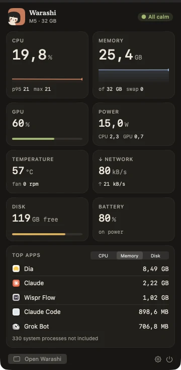

Free public beta · for Apple silicon Macs on macOS 26
The flight recorder for your Mac.
Warashi watches quietly from your menu bar and remembers. What slowed your Mac down, which app drained the battery, and what your next Mac really needs.
 23%14:32
23%14:32

One spirit. One number. Nothing in your way.
Warashi keeps a single small item in your menu bar. The rest is one click away, and it speaks up only when something needs you.
- The menu barThe spirit and the number you care about: CPU, memory, power, temperature, and more.
- The notch, put to workCPU and memory hug the notch. Hover, and it opens into a mini dashboard.
- Any displayOn screens without a notch, a small island does the same.
23%14:3224.8GWhen memory runs short, the number becomes the warning.
Not just this second. The whole story.
One calm window that shows what happened while you weren't looking: the last minute, the last day, the last year.


The questions you actually have.
Do I need a new Mac? Which one?
The Upgrade Advisor watches memory pressure, swap, storage growth and how often the chip runs flat out. After 30 days it says how much memory and storage your next Mac needs, and whether a faster chip would help, with the evidence. How it decides
What does each app really cost me?
Time in front, joined with energy: what an app costs per hour you use it, and what drained the battery from apps you never even opened. Time × Cost
Why was it slow ten minutes ago?
A year of history, every few seconds for the last day. Scroll back to the moment it happened and see the app behind it. Read the guide
Tell me when it matters. Only then.
A runaway app, memory growing fast, a nearly full disk, heat, battery health. Once per problem, with the evidence. Alerts
A monitor that doesn't cost you.
Native Swift, built for Apple silicon. Warashi measures its own cost the same way it measures every other app, and shows it to you.
of one core, in the background
of memory, typically
Download, open, done.
Your Mac's story stays on your Mac.
History, app names and activity live in a small database on your Mac and never leave it. No account. No screen recording, no keystrokes, no file access.
Warashi sends anonymous usage statistics (version, macOS, chip family, which features are used) to help improve it. Never app names, files or history. Exactly what's sent

Good questions.
When can I get Warashi?
Now. The beta is free to download and updates itself. When Warashi 1.0 arrives, the beta stops and asks you to update and buy a licence.
Which Macs does it run on?
Macs with Apple silicon (M1 and later) running macOS 26 or newer.
Is it free?
Free during the beta. Warashi 1.0 will be a one-time purchase, with no subscription.
How is it different from Activity Monitor?
Activity Monitor shows this second. Warashi remembers: what happened while you weren't looking, which app was behind it, what it cost, and what that means for your next Mac.
Made by one person, with care.

Hi, I'm Adam, an indie developer. Warashi is my own project: the app, its design and this website.
I want it to be the kind of Mac app I'd love to use myself: calm, honest about its numbers, and light on your Mac. If you have an idea, or something isn't right, write to me. I'd like to hear it.
Adam